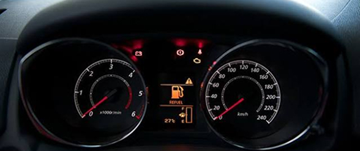
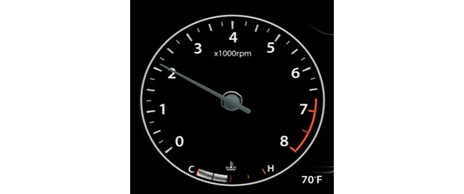
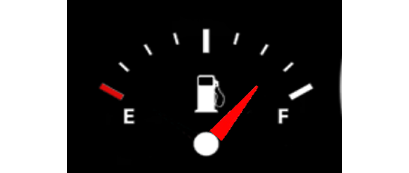
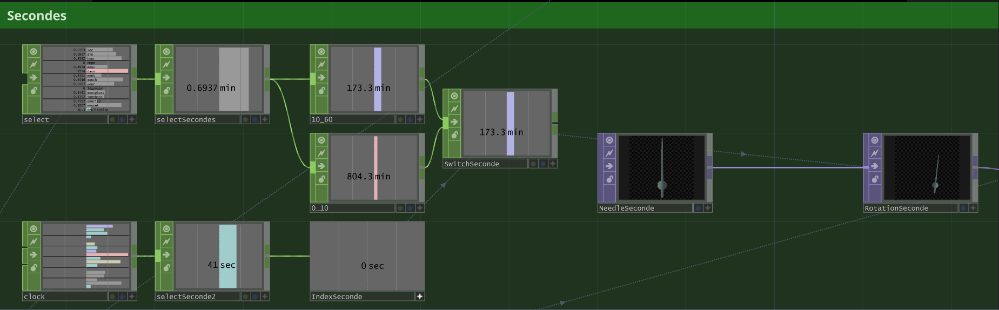
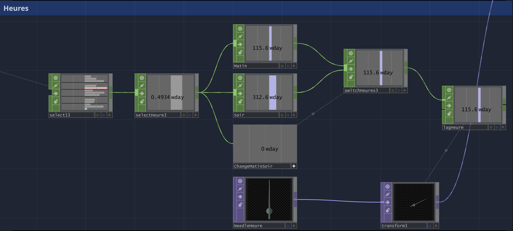

Interactif
Dans le cadre de mon cours de Médias interactifs, dans ma 6e session, j’ai dû confectionné une horloge hors norme, tout en étant capable de lire l’heure.
Idéation, Programmation, Design
Travail solo
Tout média et inspirations sous licence CC
Média trouvé sur Freekpik et Vecteezy
Aucune intelligence artificielle n’a été utilisée pour ce projet
Ayant carte blanche pour ce projet, j'ai choisi un sujet qui me passionne : les voitures. Je me suis donc lancé dans la création d'un tableau de bord animé.



J'ai dû trouver des médias à utiliser comme arrière-plan, puis retirer les aiguilles et tout le reste à l'aide de Photoshop.


J'ai dû placer chaque aiguille manuellement à l'aide du panneau de paramètres, puis ajuster le point de pivot pour qu'elles bougent de façon naturelle.




J'ai programmé l'animation de chaque élément visuel, comme les aiguilles et l'affichage de la vitesse en km/h.



Mon plus grand défi a été de programmer le retour de l'aiguille des secondes et de la relancer au bon moment. J'ai réservé 15 % du cycle de 60 secondes (soit 9 s) à la rotation en sens inverse, puis le mouvement normal repart pile à la fin de ce retour.